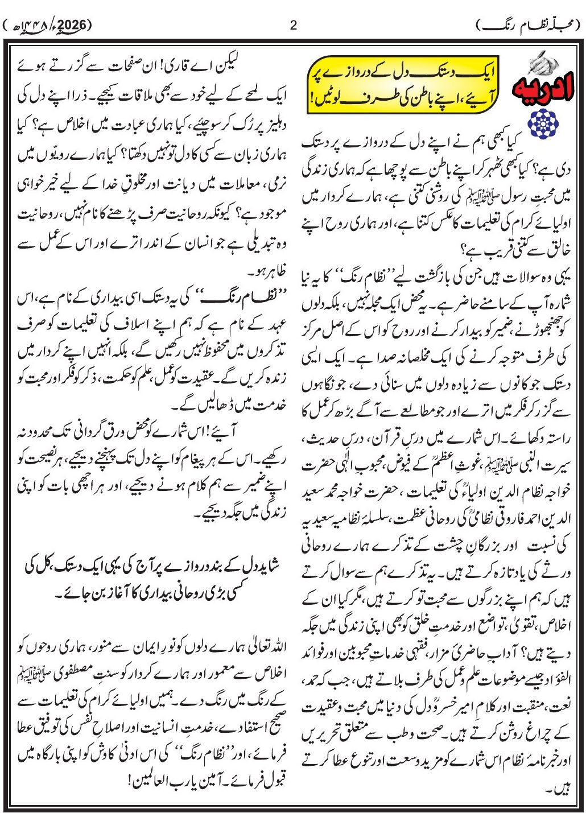

محبوبین ایڈیشن
← پچھلا
3 / 91
اگلا →
صفحہ 1
صفحہ 2
صفحہ 3
صفحہ 4
صفحہ 5
صفحہ 6
صفحہ 7
صفحہ 8
صفحہ 9
صفحہ 10
صفحہ 11
صفحہ 12
صفحہ 13
صفحہ 14
صفحہ 15
صفحہ 16
صفحہ 17
صفحہ 18
صفحہ 19
صفحہ 20
صفحہ 21
صفحہ 22
صفحہ 23
صفحہ 24
صفحہ 25
صفحہ 26
صفحہ 27
صفحہ 28
صفحہ 29
صفحہ 30
صفحہ 31
صفحہ 32
صفحہ 33
صفحہ 34
صفحہ 35
صفحہ 36
صفحہ 37
صفحہ 38
صفحہ 39
صفحہ 40
صفحہ 41
صفحہ 42
صفحہ 43
صفحہ 44
صفحہ 45
صفحہ 46
صفحہ 47
صفحہ 48
صفحہ 49
صفحہ 50
صفحہ 51
صفحہ 52
صفحہ 53
صفحہ 54
صفحہ 55
صفحہ 56
صفحہ 57
صفحہ 58
صفحہ 59
صفحہ 60
صفحہ 61
صفحہ 62
صفحہ 63
صفحہ 64
صفحہ 65
صفحہ 66
صفحہ 67
صفحہ 68
صفحہ 69
صفحہ 70
صفحہ 71
صفحہ 72
صفحہ 73
صفحہ 74
صفحہ 75
صفحہ 76
صفحہ 77
صفحہ 78
صفحہ 79
صفحہ 80
صفحہ 81
صفحہ 82
صفحہ 83
صفحہ 84
صفحہ 85
صفحہ 86
صفحہ 87
صفحہ 88
صفحہ 89
صفحہ 90
صفحہ 91
فہرست

← پچھلا
اگلا →